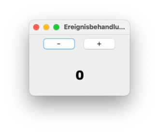

Ereignisse¶
Im vorangegangenen Kapitel haben wir gelernt, wie wir Grafische Nutzeroberflächen (GUI) erstellen können. Nun wollen wir uns anschauen, wie auf Ereignisse reagiert werden kann, die die Nutzerin auf dieser Grafischen Oberfläche auslöst. Wenn wir beispielsweise in unserem Taschenrechner auf einen Button klicken, dann soll entweder die Ziffer in dem Textfeld oben erscheinen oder es soll die Operation ausgeführt werden, auf die wir geklickt haben. In grafischen Nutzeroberflächen gibt es nicht nur Buttons, auf deren Klick-Ereignisse wir reagieren wollen, es gibt auch Eingaben über die Tastatur, das Fenster kann mit der Maus bewegt, vergrößert oder verkleinert werden, es können Kontextdialoge durch das Drücken der rechten Maustaste geöffnet werden usw. Wir lernen hier, welche unterschiedlichen Ereignisse es gibt und wie wir diese behandeln können, d.h. wie wir die Reaktion auf diese Ereignisse implementieren.
Zunächst überlegen wir uns, wie es überhaupt möglich sein kann, dass Ereignisse (also Aktionen der Nutzerin) auf unserer grafischen Oberfläche erkannt werden und auf diese Ereignisse entsprechend reagiert werden kann. Man könnte (in einer Schleife) permanent bei der Maus oder der Tastatur anfragen, ob eine Taste gedrückt oder ob die Maus bewegt wurde. Das ist aber viel zu imperformant und würde das Programm blockieren. Diese Aufgabe wird nämlich von der Laufzeitumgebung automatisch übernommen. Im Hintergrund geschieht genau so etwas, aber wir müssen uns gar nicht darum kümmern. Wenn z.B. eine Maustaste gedrückt wird, dann wird im Hintergrund durch die Laufzeitumgebung eine bestimmte Methode aufgerufen (mouseClicked()). Woher wissen wir, wie diese Methode heißt? Die Antwort sind natürlich: Interfaces!
Interfaces für Ereignisse - Listener¶
Die Idee ist die Folgende:
- Komponenten können unterschiedliche Ereignisse empfangen (Button angeklickt, Text eingegeben, Maus bewegt, Fenster geschlossen, ...).
- Die Anwendung registriert einen sogenannten Listener (ein Listener-Objekt) bei der Komponente für Ereignisse von Interesse.
- Tritt ein Ereignis, für das man sich beim Listener angemeldet hat, an der Komponente ein, wird eine bestimmte Methode am Listener-Objekt aufgerufen.
- Alle diese Methoden, die durch die Laufzeitumgebung für bestimmte Ereignisse aufgerufen werden können, sind in Interfaces definiert.
- Es gibt unterschiedliche Interfaces, die man implementieren muss, je nach den Ereignissen, auf die man reagieren möchte (Mausereignisse, Tastaturereigniss, Ereignisse am Fenster, ...).
Das Vorgehen kann man sich wie in der Abbildung gezeigt vorstellen:

Der Listener lauscht permanent auf Ereignisse. Sobald ein Ereignis aufritt, auf das der Listener lauscht, ruft er eine entsprechende Methode auf. Damit wir im Programm auf dieses Ereignis reagieren können (die Ereignisbehandlung implementieren), müssen wir zwei Dinge tun:
- uns an dem Listener anmelden, der auf die Ereignisse lauscht, die uns interessieren (die wir behandeln wollen) und
- die Ereignisbehandlung in der vom Listener aufgerufenen Methode implementieren.
Die Methoden, die wir implementieren sind abstrakt in Interfaces festgelegt. Das bedeutet also, dass wir für die Ereignisbehandlung Interfaces implementieren.
Erstes Beispiel ActionListener¶
Wir starten mit einem ersten Beispiel. Dazu haben wir uns folgende GUI erstellt:
1 2 3 4 5 6 7 8 9 10 11 12 13 14 15 16 17 18 19 20 21 22 23 24 25 26 27 28 29 30 31 32 33 34 35 36 37 38 39 40 41 | |
Die Ausführung des Programms zeigt folgendes kleines Fenster:

Es soll nun implementiert werden, dass sich durch einen Klick auf den Button die dargestellte Zahl um 1 erhöht. Die Methode, die ausgelöst wird, wenn ein Button geklickt wird, heißt actionPerformed(). Diese ist in dem Interface ActionListener implementiert. Wir müssen nun also
- das Interface
ActionListenerimplementieren und - uns beim
ActionListeneranmelden.
Das Interface ActionListener implementieren¶
Interfaces implementieren können wir bereits - mithilfe von implements:
- Wir schreiben also:
public class Ereignisbehandlung extends JFrame implements ActionListener. - Das Interface
ActionListenermuss aus demjava.awt.event-Paket importiert werden. - Wir klicken auf
Add unimplemented methodsund in der Klasse erscheint die folgende Methode:
@Override
public void actionPerformed(ActionEvent e) {
// TODO Auto-generated method stub
}
Das Interface ActionListener enthält also nur genau eine Methode, die implmentiert werden muss. Dieser Methode wird ein ActionEvent als Parameter übergeben. Diese Klasse muss ebenfalls aus dem java.awt.event-Paket importiert werden.
Wenn unser Button gedrückt wird, dann wird also "automatisch" (durch die Laufzeitumgebung) die Methode actionPerformed() aufgerufen. Alles, was passieren soll, wenn der Button geklickt wird, müssen wir in dieser Methode implementieren. Wir beginnen mit einer ganz einfachen Implementierung, mit einer simplen Ausgabe auf die Konsole:
@Override
public void actionPerformed(ActionEvent e)
{
System.out.println("Button gedrueckt!");
}
Wenn wir nun auf den Button klicken, passiert aber noch nichts, denn wir müssen den Button noch am ActionListener anmelden (siehe oben Punkt 2 in der Liste).
Am ActionListener anmelden¶
Damit das Klick-Ereignis auf den Button auch so behandelt wird, wie wir das in der actionPerformed()-Methode definiert haben, müssen wir diesen Button an den ActionListener anmelden. Dazu existiert für einen JButton (für alle Komponenten JComponent) die Methode addActionListener(ActionListener l). Dieser Methode muss nun ein ActionListener-Objekt übergeben werden, also ein Objekt, das das Interface ActionListener implementiert hat. Da wir den ActionListener in unserer Fensterklasse implementiert haben, ist das Fenster ein solches Objekt, das den ActionListener implementiert hat. Wir verwenden also this.
1 2 3 4 5 6 7 8 9 10 11 12 13 14 15 16 17 18 19 20 21 22 23 24 25 26 27 28 29 30 31 32 33 34 35 36 37 38 39 40 41 42 43 44 45 46 47 48 49 50 51 52 | |
Jedes mal, wenn wir nun auf den Button klicken, wird eine Ausgabe auf der Konsole erzeugt. Nach 5 Klicks also
Button gedrueckt!
Button gedrueckt!
Button gedrueckt!
Button gedrueckt!
Button gedrueckt!
Wir haben das erste Ereignis behandelt, das durch eine Nutzerinnenaktion ausgelöst wurde - das Klicken eines Buttons!
Zugriff auf Komponenten in actionPerformed()¶
Wenn wir nun aber die actionPerformed()-Methode so implementieren wollen, dass sich der Text des JLabels unten ändert, dann stellen wir fest, dass wir in actionPerformed() ja gar keinen Zugriff auf dieses JLabel haben, weil die Referenz darauf nur eine lokale Variable in der init()-Methode ist. Um in allen Methoden der Klasse Ereignisbehandlung Zugriff auf dieses JLabel zu erlangen, müssen wir es global deklarieren (als Objektvariable der Klasse Ereignisbehandlung).
Zusätzlich erzeugen wir eine weitere Variable, die die Anzahl der bisherigen Klicks mitzählt, um diesen Wert dann im JLabel darzustellen.
1 2 3 4 5 6 7 8 9 10 11 12 13 14 15 16 17 18 19 20 21 22 23 24 25 26 27 28 29 30 31 32 33 34 35 36 37 38 39 40 41 42 43 44 45 46 47 48 49 50 51 52 53 54 55 56 | |
Nun ändert sich mit jedem Button-Klick der angezeigte Wert.

Mehrere Buttons - ActionEvent¶
Wir ändern unsere GUI, indem wir die init()-Methode ändern:
25 26 27 28 29 30 31 32 33 34 35 36 37 38 39 40 41 42 43 44 | |
Die GUI sieht dadurch nun so aus:

Das heißt, wir haben zwei Buttons und wollen für diese Buttons das Klick-Ereignis unterschiedlich behandeln. Bei Klick auf den --Button soll der Wert der Zahl dekrementiert werden, bei Klick auf den +-Button inkrementiert. Wir müssen nun also innerhalb der actionPerformed()-Methode unterscheiden, welcher Button gedrückt wurde, d.h. durch welchen Button das ActionEvent ausgelöst wurde, welches wir behandeln. Dabei hilft uns das ActionEvent-Objekt, das der actionPerformed(ActionEvent e)-Methode übergeben wird. Die Klasse ActionEvent hat einige nützliche Methoden. Wir verwenden jetzt zunächst eine Methode, die die Klasse ActionEvent von der Klasse EventObject geerbt hat, die getSource()-Methode:
48 49 50 51 52 53 54 55 56 57 58 59 60 61 62 63 64 65 | |
Die getSource()-Methode von ActionEvent liefert die Komponente (als Object) zurück, die das ActionEvent ausgelöst hat. Damit wir Objektmethoden (z.B. getText() - Zeilen 55 und 59) von JButton verwenden können, müssen wir dieses Object nach JButton konvertieren (Zeile 54). Damit dies gelingt, müssen wir zunächst prüfen, ob es sich bei der auslösenden Komponente tatsächlich um einen JButton handelt. Das erledigen wir hier mit dem instanceof-Operator in Zeile 52.
Mithilfe der getText()-Methoden erfragen wir den Text, der auf den Buttons steht. Wir vergleichen diesen mithilfe der equals()-Methode und können somit unterscheiden, ob das ActionEvent durch den +- oder den --Button ausgelöst wurde.
Wir dürfen nicht vergessen, die beiden Buttons an den ActionListener anzumelden:
1 2 3 4 5 6 7 8 9 10 11 12 13 14 15 16 17 18 19 20 21 22 23 24 25 26 27 28 29 30 31 32 33 34 35 36 37 38 39 40 41 42 43 44 45 46 47 48 49 50 51 52 53 54 55 56 57 58 59 60 61 62 63 64 65 66 67 68 69 70 71 72 | |
Nun haben wir für die beiden Buttons eine unterschiedliche Ereignisbehandlung realisiert.
ActionCommand¶
Die Abfrage des Textes auf den Buttons zur Unterscheidung der Buttons ist nicht clean code. Das hat mehrere Gründe:
- GUIs werden häufig für mehrere Sprachen zur Verfügung gestellt. Je nach Einstellungen in den Konfigurationen kann die "angezeigte" Sprache der GUI verändert werden. Somit würden auch die Buttons ihre Beschriftung ändern und man müsste in der
actionPerformed()-Methode viele Varianten für die Textabfrage hinzufügen. - Buttons können auch einfach nur Icons enthalten, d.h. gar keinen Text.
- Der auf Buttons angezeigte Text kann sehr "kryptisch" sein, also irgendwelche Sonderzeichen oder Schriftzeichen enthalten. Es kann z.B. auch HTML-Code sein.
Das alles macht die Abfrage des Textes und insbesondere den Vergleich kompliziert bis gar unmöglich. Deshalb sollte man stattdessen besser das ActionCommand abfragen. Das ActionCommand wird mithilfe der setActionCommand(String command)-Methode gesetzt und mithilfe der getActionCommand()-Methode abgefragt.
Wenn für einen Button nicht mithilfe der setActionCommand()-Methode ein ActionCommand definiert wurde, dann entspricht das ActionCommand dem Text auf dem Button. Das bedeutet, dass die getActionCommand()-Methode trotzdem verwendet werden könnte.
Wir bräuchten also nur in der actionPerformed()-Methode getText() durch getActionCommand() ersetzen und hätten das gleiche Ergebnis:
53 54 55 56 57 58 59 60 61 62 63 64 65 66 67 68 69 70 | |
Wenn wir allerdings eigene (andere) ActionCommands für die Buttons setzen, dann müssen wir auch den Vergleich anpassen:
1 2 3 4 5 6 7 8 9 10 11 12 13 14 15 16 17 18 19 20 21 22 23 24 25 26 27 28 29 30 31 32 33 34 35 36 37 38 39 40 41 42 43 44 45 46 47 48 49 50 51 52 53 54 55 56 57 58 59 60 61 62 63 64 65 66 67 68 69 70 71 72 73 | |
Success
Wir kennen nun das Konzept, das hinter der Behandlung von Ereignissen steckt. Wir melden die Komponente, für die wir eine Ereignisbehandlung für ein Ereignis implementieren wollen, an den entsprechenden Listener an und wir implementieren das zugehörige Interface. Wir haben Buttons erfolgreich an den ActionListener angemeldet und das ActionListener-Interface implementiert. Dieses Interface enthält nur genau eine Methode, actionPerformed(). Wir können in dieser Methode auch bereits ermitteln, welche Komponente das ActionEvent ausgelöst hat, das gerade behandelt wird. Dadurch können wir in derselben actionPerformed()-Methode die (unterschiedliche) Ereignisbehandlung für mehrere Buttons implementieren. Damit können wir nun schonmal einen funktionsfähigen Taschenrechner bauen! Der Lösung für Aufgabe 8 steht nichts mehr im Wege!
Innere Klassen¶
Mit der Implementierung des ActionListener hat alles geklappt und funktional ist auch alles in Ordnung, aber so richtig schön ist es nicht - kein clean code. Dafür gibt es mehrere Gründe:
- Unsere Klasse verstößt auf jeden Fall gegen das Single Responsibility Principle (SRP). Unsere Klasse ist einerseits ein Fenster und andererseits kümmern wir uns in der Klasse auch um Funktionalitäten. Bei der Erstellung von Anwendungen mit grafischen Nutzeroberflächen hat sich sogar eine Dreiteilung etabliert, das sogenannte Model-View-Controller-Pattern. Darin ist die Darstellung der GUI die View, das Verwalten und Manipulieren der Daten das Model und die Steuerung mittels Nutzeraktionen der Controller. Langfristig streben wir eine solche Dreiteilung ebenfalls an.
- Wenn wir sehr viele Buttons (und später auch noch Textfelder, Menüs usw.) haben, dann kann die
actionPerformed()-Methode schon allein dadurch sehr lang werden, dass wir viele Fallunterscheidungen benötigen, um zu ermitteln, welche Komponente dasActionEventüberhaupt ausgelöst hat. Wenn dann jeweils noch viel Funktionalität hinzukommt, wird dieactionPerformed()-Methode viel zu lang. - Wir haben bis jetzt nur ein einziges Interface, das
ActionListener-Interface, implementiert und dieses enthält auch nur eine einzige Methode. Wenn wir nun auch noch auf Maus-, Mausbewegungs-, Tastatur- und Fenstereignisse reagieren wollen, dann implementieren wir mindestens vier weitere Interfaces, die jeweils bis zu sechs Methoden enthalten. Unsere Klasse würde sehr lang werden.
Wir benötigen Ideen, wie wir diese Konflikte auflösen können. Dazu benötigen wir neue Strukturierungsmöglichkeiten. Ein erster Schritt dahin sind Innere Klassen. Wir betrachten Innere Klassen aber nur als einen Zwischenschritt hin zu anonymen Klassen. Wir werden uns ansonsten nicht weiter mit inneren Klassen auseinandersetzen.
Begriffsbestimmung¶
Prinzipiell handelt es sich bei inneren Klassen um Klassen in einer Klasse. Der Oberbegriff für eine Klasse in einer Klasse ist nested class. In nested classes unterscheidet man zwischen
- statischen und
- nicht-statischen Klassen.
Die nicht-statischen nested Klassen (also Klassen, wie wir sie bisher kennen - wir kennen noch gar keine statischen Klassen) heißen innere Klassen. Wir wollen uns gar nicht mit statischen verschachtelten Klassen auseinandersetzen. Es sei an dieser Stelle aber der wesentliche Unterschied zwischen den statischen und den nicht-statischen verschachtelten Klassen genannt: nicht-statische Klassen (also innere Klassen) haben Zugriff auf die Eigenschaften der äußeren Klasse, statische verschachtelte Klassen haben diesen Zugriff nicht. Wenn wir schon bei Sachen sind, die uns nicht interessieren ;-) : sogenannte lokale Klassen sind Klassen in einer Methode.
Innere Klassen sind aber nützlich und sinnvoll. Wir kennen auch schon eine, nämlich Map.Entry - die Klasse Entry ist eine innere Klasse von Map (ganz exakt handelt es sich bei beiden nicht um Klassen, sondern um Interfaces, das macht hier aber keinen Unterschied). In der Klasse Integer gibt es übrigens auch eine innere Klasse. Die fungiert als ein Cache für häufig verwendete Zahlen. Wenn Sie ein Integer-Objekt mit einem Wert kleiner als 128 erstellen, dann kommt dieses Objekt in den Cache und wenn Sie ein weiteres Objekt mit dem gleichen Wert erzeugen, dann wird dafür einfach das Objekt aus dem Cache verwendet. Das führt zu diesem "komischen" Verhalten:
Integer i1 = Integer.valueOf(1001);
Integer i2 = Integer.valueOf(1001);
Integer i3 = Integer.valueOf(101);
Integer i4 = Integer.valueOf(101);
System.out.println(i1 == i2); // false
System.out.println(i3 == i4); // true
Der erste Vergleich ist false, weil es sich bei i1 und i2 um Referenzen auf zwei verschiedene Objekte handelt. Der zweite Vergleich ist aber true, weil es sich bei i3 und i4 um Referenzen auf dasselbe Objekt (aus dem Cache) handelt. Aber das nur nebenbei, um zu erläutern, dass es sinnvolle Verwendungen für innere Klassen gibt.
Ereignisbehandlung mit innerer Klasse¶
Wir verwenden unsere Klasse Ereignisbehandlung von oben. Aber wir lagern die eigentliche Behandlung des ActionEvents in eine innere Klasse aus. Das heißt, wir trennen die Erstellung der GUI und die Behandlung der Ereignisse strukturell, in dem diese Dinge in zwei unterschiedlichen Klassen implementiert sind. Da es sich aber um die Ereignisbehandlung für genau die erstellte GUI handelt, ergibt es wenig Sinn, diese in eine "normale" Top-Level-Klasse zu überführen. Deshalb verwenden wir dafür eine innere Klasse:
1 2 3 4 5 6 7 8 9 10 11 12 13 14 15 16 17 18 19 20 21 22 23 24 25 26 27 28 29 30 31 32 33 34 35 36 37 38 39 40 41 42 43 44 45 46 47 48 49 50 51 52 53 54 55 56 57 58 59 60 61 62 63 64 65 66 67 68 69 70 71 72 73 74 75 76 | |
So viel hat sich gar nicht geändert:
- Die Klasse
Ereignisbehandlungimplementiert jetzt nicht mehr selbst das InterfaceActionListener(Zeile8). - Das hat jetzt die neue (innere) Klasse
ActionHandlerübernommen (Zeile54). - Da der
ActionListenernun nicht mehr inEreignisbehandlungimplementiert ist, sondern inActionHandler, muss beim Anmelden an denActionListenernun nicht mehr dasthis-Objekt, sondern ein Objekt vonActionHandlerübergeben werden (Zeilen34und35). - Da sich die Methode
actionPerformed()nun in der KlasseActionHandlerbefindet, handelt es sich dort bei derthis-referenz um eine Referenz auf einActionHandler-Objekt. Wir können also nicht mehr einfachthis.anzKlicks++;schreiben, da es sich beianzKlicksja nicht um eine Eigenschaft derActionHandler-Klasse, sondern um eine Eigenschaft derEreignisbehandlung-Klasse handelt. Das Gleiche gilt auch für dasJLabel unten(Zeilen65,69und72).
Um auf die Eigenschaften der äußeren Klasse zuzugreifen, kann in der inneren Klasse über den Klassennamen der äußeren Klasse auf die Eigenschaften der äußeren Klasse referenziert werden. Das heißt, wenn die äußere Klasse AeussereKlasse heißt und eine Eigenschaft eigenschaft_AeK hat, dann kann aus der inneren Klasse heraus wie folgt auf diese Eigenschaft zugegriffen werden:
AeussereKlasse.this.eigenschaft_AeK
In unserem Fall bedeutet das, dass wir nun über Ereignisbehandlung.this.anzKlicks++; und Ereignisbehandlung.this.anzKlicks--; den Wert der Eigenschaft anzKlicks der äußeren Klasse Ereignisbehandlung ändern können (Zeilen 65 und 69). Um auf das JPanel unten aus der inneren Eigenschaft zugreifen zu können, schreiben wir deshalb Ereignisbehandlung.this.unten (Zeile 72).
Beachten Sie, dass das this darin notwendig ist. Wenn wir schreiben würden
Ereignisbehandlung.anzKlicks++;
, dann würde das bedeuten, dass es sich bei anzKlicks um eine statische (Klassen-)Variable handeln würde. Um auf (nicht-statische) Objektvariablen zuzugreifen, verwenden wir in der Klasse ja die Referenz this und um also auf die Objektvariablen der äußeren Klasse zuzugreifen, schreiben wir
Ereignisbehandlung.this.anzKlicks++;
Dasselbe gilt für Methoden.
Wir haben nun immerhin die Verantwortlichkeiten zur Erstellung der GUI und zur Behandlung der Ereignisse in zwei verschiedene Klassen aufgeteilt. Das Single Responsibility Principle ist somit erfüllt. Das ist schonmal gut! Wir haben aber eingangs erwähnt, dass wir uns die inneren Klassen nur als ein Zwischenschritt anschauen. Dazu überlegen wir uns nochmal Folgendes:
- Wir haben für die Ereignisbehandlung eine eigene Klasse
ActionHandlergeschrieben. - Um sich an den
ActionListeneranzumelden, wurde deraddActionListener()-Methode dafür ein Objekt vonActionHandlerübergeben (siehe oben die Zeilen34und35).
Nun machen wir etwas Verrücktes ;-) : wir übergeben der addActionListener()-Methode auch wieder ein Objekt, in dem wir den ActionListener implementiert haben (implementieren), aber diese Implementierung erfolgt nicht in einer separaten Klasse, die einen Namen hat (ActionHandler), sondern die Implementierung erfolgt direkt dort, wo das Objekt übergeben wird, dafür ohne einen Klassennamen - eine anonyme Klasse.
Ereignisbehandlung mit anonymer Klasse¶
Jede Komponente, für die auf das ActionEvent reagiert werden soll, muss an den ActionListener mithilfe der addActionListener()-Methode angemeldet werden. Dieser Methode wird ein Objekt übergeben, in dem der ActionListener implementiert ist. Wir implementieren jetzt direkt dort, wo wir das Objekt übergeben, genau diese Klasse, geben ihr aber keinen Namen. Stattdessen geben wir ActionListener wie einen Konstruktor an, obwohl es sich bei ActionListener um ein Interface handelt, welches erstens keinen Konstruktor besitzt und zweitens von dem gar kein Objekt erzeugt werden kann. Wir schauen uns das am Beispiel des --Buttons an:
1 2 3 4 5 6 7 8 9 | |
Wir übergeben der addActionListener()-Methode ein Objekt einer anonymen Klasse. Diese anonyme Klasse implementiert das ActionListener-Interface. Zunächst gehen wir nochmal einen Schritt zurück und schauen uns die Varianten an, die wir davor hatten:
minus.addActionListener(this); // ActionListener war in der Fenster-Klasse implementiert
minus.addActionListener(new ActionHandler()); // ActionListener war in der inneren Klasse ActionHandler implementiert
Nun implementieren wir das ActionListener-Interface direkt "vor Ort" - dort, wo es auch übergeben wird. Der Aufruf der addActionListener()-Methode ist übrigens noch exakt der gleiche
1 2 3 4 5 6 7 8 9 | |
, nur das übergebene Objekt sieht etwas "komisch" aus:
1 2 3 4 5 6 7 8 9 | |
Wir erkennen aber den Klassenrumpf, der ganz normal mit einer geschweiften Klammer { in Zeile 1) beginnt und mit einer schließenden geschweiften Klammer } in Zeile 9 endet. Darin ist, auch ganz normal, die actionPerformed()-Methode implementiert, die ja implementiert werden muss, wenn das ActionListener-Interface implementiert wird. Innerhalb der Methode greifen wir auch, wie bei inneren Klassen üblich, auf die Objekteigenschaften der äußeren Klasse zu.
Eigentlich ist nur dieser Ausdruck neu: new ActionListener() { }. Hier müssen wir uns einfach merken, dass es sich dabei um drei Sachen hadelt, die zugleich passieren:
- Es wird das
ActionListener-Interface implementiert. Dies geschieht "ganz normal" in einem Klassenrumpf, der mit{beginnt und mit}endet. - Die Klasse, in der das Interface implemntiert wird, hat aber keinen Namen, deshalb schreiben wir auch nicht
Klassenmane implements ActionListener, sondern nurActionListener. - Es wird ein Objekt erzeugt. Dazu wird, ganz normal, das Schlüsselwort
newverwendet und ein Konstruktor - allerdings hier der Konstruktor einer Klasse, die keinen Namen hat. Da diese Klasse aber dasActionListener-Interface implementiert, kann dieser Name für den Konstruktor verwendet werden.
Der große Vorteil dieser Art der Implementierung des ActionListener-Interfaces liegt darin, dass jede Komponente ihre eigene Implementierung bekommt und dass es deshalb nicht notwendig ist, eine Fallunterscheidung zu treffen, welche Komponente das Ereignis ausgelöst hat. Hier kann es nur der minus-Button gewesen sein!
Die beiden Implementierungen des ActionListeners mithilfe einer anonymen Klasse sehen so aus:
1 2 3 4 5 6 7 8 9 10 11 12 13 14 15 16 17 18 19 | |
Den ActionListener mithilfe anonymer Klassen zu implementieren, ist ein Best Practice. In sehr vielen Fällen gewinnt man an Übersichtlichkeit. Wir werden im Rest des Semesters immer mal diskutieren, wann die Verwendung anonymer Klassen sinnvoll ist und wann nicht. Manchmal ist es aber auch nur Geschmackssache.
Für diejenigen, die sich für nested classes interessieren, sei dieser Link empfohlen.